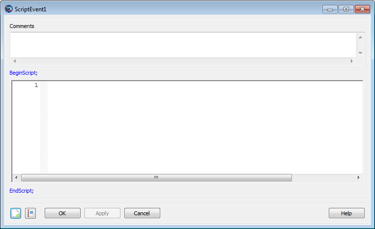

BeginScript — Execute free-form script commands
BeginScript[script statements] …EndScript
The BeginScript and EndScript commands (ScriptEvent in the GUI) allow you to write free-form script statements in the mission sequence without the statements being shown as individual commands in the GMAT GUI. This is useful as a way to group and label a complex sequence of statements as one unit, or to write small sequences of script statements when otherwise using the GUI to create the mission sequence. Within the script itself, there is no difference in the execution of statements within a BeginScript/EndScript block and those outside of it.
See Also: the section called “Script Editor”
|  |
The ScriptEvent GUI window divides the command into three parts: an initial comment, fixed BeginScript and EndScript commands, and the content of the block itself. The scripting window is a miniature version of the main script editor, and features line numbers, syntax highlighting, code folding, and all of the editing tools available in the full editor. See the the section called “Script Editor” documentation for more information. The ScriptEvent window performs script syntax validation when changes are applied. Nested BeginScript/EndScript blocks in the script language are collapsed into a single ScriptEvent when loaded into the GUI, and are saved to a single BeginScript/EndScript block when saved to a script.
Perform a calculation inside a BeginScript/EndScript block. When loaded into the GUI, the calculations within the BeginScript/EndScript block will be contained within a single ScriptEvent command.
Create Spacecraft aSat
Create Propagator aProp
Create ImpulsiveBurn aBurn
Create Variable a_init v_init
Create Variable a_transfer v_transfer_1 v_transfer_2
Create Variable a_target v_final mu
Create Variable dv_1 dv_2
mu = 398600.4415
a_target = 42164
BeginMissionSequence
% calculate Hohmann burns
BeginScript
a_init = aSat.SMA
v_init = aSat.VMAG
a_transfer = (a_init + a_target) / 2
v_transfer_1 = sqrt(2*mu/a_init - mu/a_transfer)
v_transfer_2 = sqrt(2*mu/a_target - mu/a_transfer)
v_final = sqrt(mu/a_target)
dv_1 = v_transfer_1 - v_init
dv_2 = v_final - v_transfer_2
EndScript
% perform burn 1
aBurn.Element1 = dv_1
Maneuver aBurn(aSat)
Propagate aProp(aSat) {aSat.Apoapsis}
% perform burn 2
aBurn.Element1 = dv_2
Maneuver aBurn(aSat)
Propagate aProp(aSat) {aSat.ElapsedSecs = aSat.OrbitPeriod}